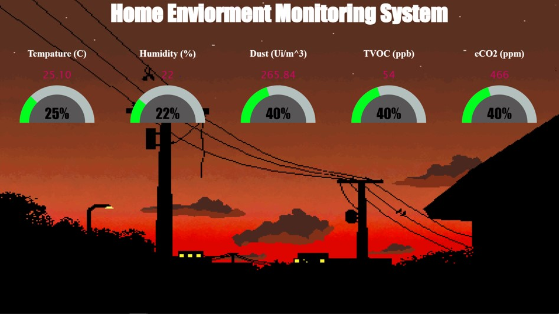

JORDAN CHUNG
Home
About Me
Projects
Contact Me
Project Details
Hyperloop Computer Vision Sensor System
Words, blah blah blah...

Home Environment Monitor
Words, blah blah blah...
RoboMaster CV Model
Words, blah blah blah...